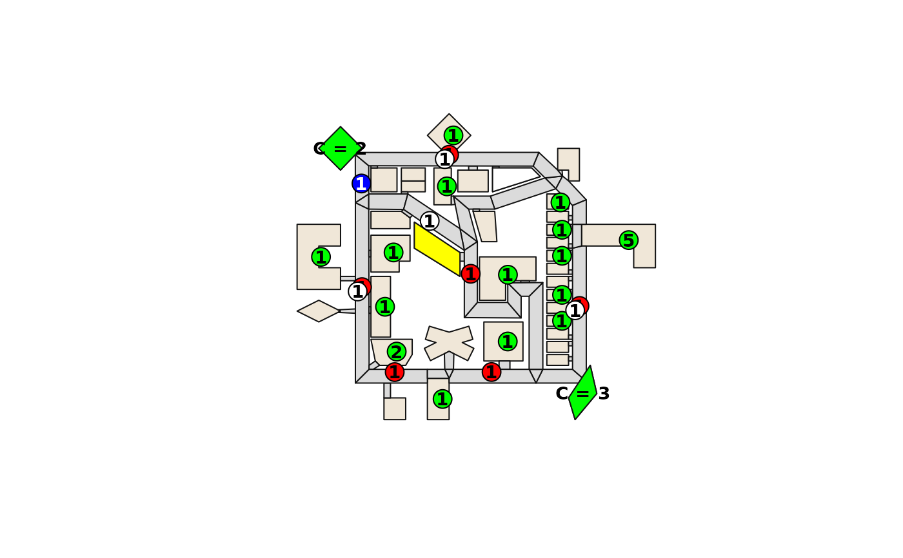

Plot a RoboCupRescue Simulation map
plot.rrs_map.Rdplot visualizes a rrs_map object, displaying the geographical
features such as buildings and roads. If a rrs_scenario object is
provided, it also overlays the initial locations of rescue platoons,
civilians, and special buildings from the scenario.
It leverages the sf package's plotting capabilities to render
the map components.
Usage
# S3 method for class 'rrs_map'
plot(
x,
scenario = NULL,
building_colour = "#f0e7d8",
building_border = "#121212",
road_colour = "#dbdbdb",
road_border = "#121212",
background_colour = NA,
...
)Arguments
- x
An object class
rrs_map.- scenario
An object of class
rrs_scenario. If provided, entities from the scenario will be plotted on the map. Defaults toNULL.- building_colour
The colour of the buildings.
- building_border
The border colour of the buildings.
- road_colour
The colour of the roads.
- road_border
The border colour of the roads.
- background_colour
The background colour of the plot.
- ...
Additional arguments passed to
par().
Details
plot first plots the basic map layout, including buildings and roads.
Then, if a scenario is given, it plots the following entities:
Refuges: Plotted in green (
#00ff00), with the capacity displayed.Fire Stations: Plotted in yellow (
#ffff00).Ambulance Centres: Plotted in white (
#ffffff).Police Offices: Plotted in blue (
#0000ff).Civilians: Plotted as green circles (
#00ff00), with the number indicating the count at that location.Fire Brigades: Plotted as red circles (
#ff0000), with the number indicating the count at that location.Ambulance Teams: Plotted as white circles (
#ffffff), with the number indicating the count at that location.Police Forces: Plotted as blue circles (
#0000ff), with the number indicating the count at that location.
The positions of human entities (agents and civilians) are slightly offset from the center of their location to avoid overlap.
Examples
gml <- system.file("extdata", "map-test.gml", package = "rrstools")
map <- read_rrs_map(gml)
# Plot only the map
plot(map)
# Plot the map with a scenario
xml <- system.file("extdata", "scenario-test.xml", package = "rrstools")
scenario <- read_rrs_scenario(xml)
plot(map, scenario)
